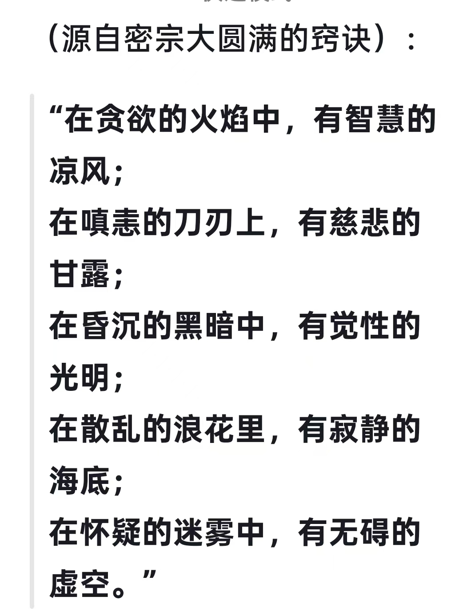
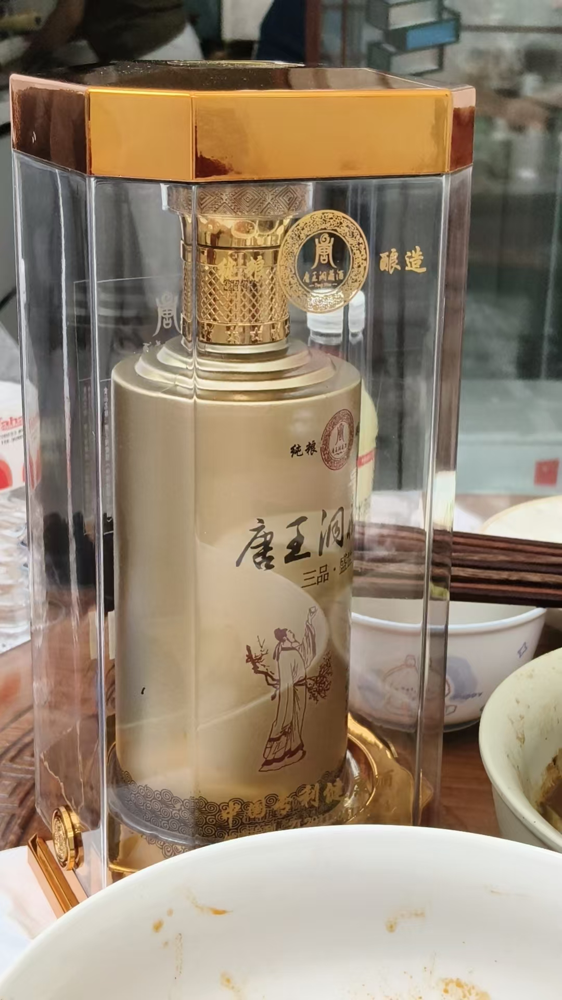

20260807如何压缩时间 如何脱离时间空间
原始对话记录
上午讲解了如何压缩时间
如何脱离时间空间
妙不可言

以下为编者整理的主题文章
编者整理 · 主题文章
"压缩时间"与"脱离时空"：一句课堂话头的展开
一句话结论：本页原记录只有两句话与两张图：老师上午讲了"如何压缩时间、如何脱离时间空间"，并评价"妙不可言"。这里据题把这组说法放进修习语境里解释：多指打坐中时间感变慢、消失的体验，属传统修习的常见描述，宜作文化了解。
一、本页是什么
本页原记录极短：正文只有两句——"上午讲解了如何压缩时间""如何脱离时间空间"，外加一句"妙不可言"，其余是两张配图。也就是说，这是一个课堂话头的痕迹，具体讲法没有留下来。为便于检索，这里据题把这组说法放进修习语境里作个说明。
二、"压缩时间"一般指什么
在打坐与入定的语境里，"压缩时间"通常不是指物理学意义的时间，而是指主观时间感的改变：
- 久坐不觉长：一坐两小时，感觉只过了一会儿；
- 时间被"拉长"：短时间里经历很多，觉得过了很久；
- 心一境时时间感消失：专注到一定程度，顾不上看表。
这与本集群《打坐，要清晰的看到自己所做》里讲的"入定到感觉不到自己"是同一类体验描述。
三、"脱离时间空间"在修习语境里
"脱离时间空间"在这类记录中，多半是对深度入定体验的一种夸张说法，指心念不再被"现在几点、我在哪里"牵着走。它常和另一些同集群的说法并列出现：
| 说法 | 常见语境 |
|---|---|
| 压缩时间 | 入定后主观时间感的改变 |
| 脱离时间空间 | 深度入定时"忘我"的体验描述 |
| 小脑屏 / 性光体走出去 | 涉及观想与"穿越"的传统说法 |
| 行走中修炼 | 不限于打坐，行住坐卧都在用功 |
需要说明的是：后两条属修习体系内部的名相，不是对物理时空的断言。
四、这类说法宜怎么看
- 当作传统文化与修习体验的名相来理解；
- 不当作物理规律或可验证的技术；
- 不追求"神通"效果，不攀比境界；
- 有健康或心理困扰时，以专业帮助为先。
五、常见问题
问：真能"脱离时间空间"吗？ 本页只留下标题式的话头，没有方法。按传统语境，这是入定体验的描述，不宜照字面理解。
问：页面只有两句话，值得整理吗？ 值得——它标记了课堂里讲过这个题目，便于检索与串联相关记录。
问：想学这个怎么入门？ 本页没有留下任何方法，本站也不作指导。可先了解打坐的常识类记录。
六、提醒
- 本页原记录以两句文字与两张图为主，内容极简；
- "压缩时间、脱离时空"是修习体验名相，非物理断言；
- 打坐涉及身心反应，本站不提供医疗建议，不适请就医；
- 全站按传统文化修习记录看待，理性参考。
说明与免责：本站为民间修炼、民俗文化与传统文化资料的整理与记录，内容源自传承者口传与个人修习体会，仅供文化交流与研究参考，不构成医疗、健康、投资或任何功效承诺。所述内容属传统术数范畴，请理性看待；如身体不适，请及时就医。请遵守法律法规与公序良俗。